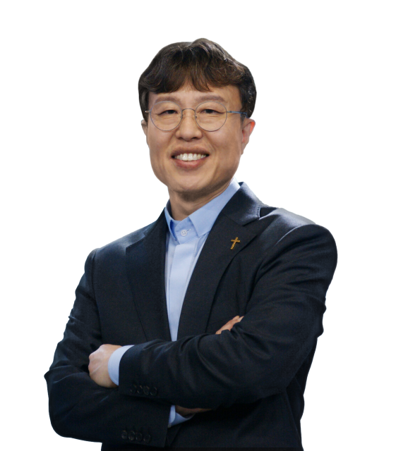

패러다임의 변화
AI 시대의 변화 속에서 교회가 새롭게 이해하고 준비해야 할 것은 무엇인가?
AI 시대, 교회는 무엇을 준비해야 하는가?
기술은 빠르게 변화하지만,
복음의 본질과 교회의 사명은 변하지 않습니다.
변화하는 시대를 깊이 이해하면서도 하나님나라의 관점으로 교회의 본질과 목회의 방향을 새롭게 정립하는 시간.
신청 버튼을 누르면 온라인 신청서가 열립니다. 참가비 등 세부 내용은 신청서에서 확인해 주세요.

시대는 바뀌고 있습니다
AI의 발전은 새로운 기술을 사용하는 문제를 넘어, 사람들이 지식을 습득하고 소통하며 살아가는 방식 자체를 변화시키고 있습니다.
교회는 이러한 흐름을 이해해야 합니다. 그러나 변화에 따라가는 것만으로 충분하지 않습니다. 하나님나라의 관점에서 복음의 핵심을 붙들고, 건강한 교회를 세워갈 방향을 함께 질문해야 합니다.
시대를 읽되 본질을 놓치지 않고,
본질을 지키되 변화를 외면하지 않는 교회.
AI 시대의 변화부터 하나님나라의 본질, 그리고 교회 공동체의 비전까지 함께 살펴봅니다.
AI 시대의 변화 속에서 교회가 새롭게 이해하고 준비해야 할 것은 무엇인가?
변화하는 시대에도 교회가 지켜야 할 복음의 핵심과 하나님나라의 가치는 무엇인가?
하나님나라 관점의 성경 이해와 제자훈련을 통해 어떻게 건강한 교회를 세워갈 것인가?
이종필 목사
킹덤처치의 비전을 중심으로 하나님나라 관점의 교회와 목회의 방향을 함께 살펴봅니다.
변화하는 시대, 교회의 방향을 함께 고민하는 자리에 초대합니다.
신청 버튼을 누르면 구글 신청서가 새 창에서 열립니다.